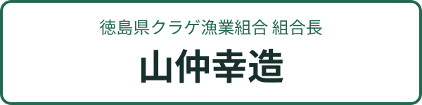

KOZO PHOTO
山仲幸造さんと、記念写真。
カメラで撮る
写真を選ぶ
幸造さんと、一緒に撮ろう。
カメラを開くか、写真を選んではじめよう。
カメラを開く

指1本で移動・2本で拡大／回転
↻ インカメラへ
配置を戻す
写真は端末内で処理します。
素材
文字
配置・名前
文字を追加
閉じる
文字
書き方向
横書き
縦書き
フォント
ゴシック
明朝
丸ゴシック
手書き風
文字効果
標準
影
浮き出し
ネオン
ラベル
グラデーション
文字色
縁取りをつける
縁取りの色
文字は画像3枚と別に最大3つ
追加する
一緒に撮れた！
閉じる
画像を保存
共有・写真に保存
撮り直す
iPhoneでは共有メニューから写真に保存できます。